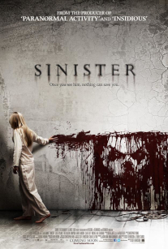
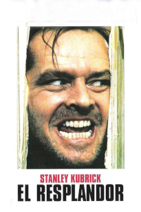
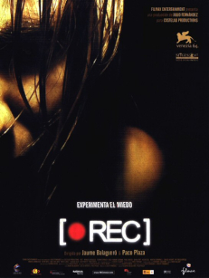
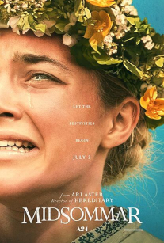

Sinister
Un escritor de novelas thriller y de terror que le gusta inspirarse viviendo en casas donde han sucedido crimenes y gracias a esto ha ayudado a la policía a resolver los mas misteriosos, encuentra unos videos donde ve como asesinan a distintas familias. Esta es una de las mejores películas de terror (a mi gusto), sabe mantener la tensión bastante bien.
La recomiendo tanto para fanáticos de las películas de terror como para aquellos que quieran pasarlo mal un rato con amigos con cine más "palomitero".
El Resplandor
Jack es escritor y recibe una oferta para mudarse a un hotel durante el invierno para trabajar como cuidador del mismo, lo que este hotel ocultaba sin embargo, es el embrujo que le hará perder la cordura lentamente. Un clásico atemporal que fomenta las bases del terror moderno, basado en la novela homónima de Stephen King.
Para los estándares actuales es una película densa y lenta, pero es muy recomendable pues pese a no ser una adaptación 100% del material original es una película indispensable.
Rec
Personalmente es una pelicula que a mi gusto la consideraría de humor negro antes que una película aterradora de por si, aunque su merito tiene pues ha reinventado las películas de terror del subgenero "falso documental" (género que había popularizado en el cine de terror el proyecto de la bruja de Blair) hasta el punto de tener una copia americana sin sustancia.
No es mi favorita pero la comprendo en el contexto del que parte por lo que la recomiendo a quien pueda gustarle este tipo de películas.
Midsommar
Un grupo de jovenes viaja a Noruega para documentarse para la tésis de uno de ellos, una secta local los capta para sus macabros rituales. La premisa es simple, no innova en absoluto pero es un espectaculo visual y grotesco que se liga a la perfección con una estética muy atractiva, mirarás por curiosidad y si entras en su juego es tremendamente recomendable.
Su mayor debilidad es que es una película densa y lenta y para aficionados de cine mas sencillo puede hacerse pesada, por lo que no la recomiendo a todo el mundo, aún así es una de mis favoritas.